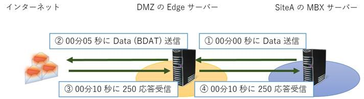

こんにちは。Exchange サポートの竹本です。
今回も引き続きエッジ トランスポート サーバーについてです。
前回の記事にて、次回は機能紹介を、、、とコメントをしていましたが、書き出してみると注意事項や Tips のご紹介がメインとなりました。
エッジ トランスポート サーバーを管理されている方々、是非ご一読ください。
エッジ サブスクリプションにより複製されたデータについて
前回もご紹介しました通り、エッジ サブスクリプションを作成することにより、組織のディレクトリに保存された Active Directory データがエッジ トランスポート サーバーへ複製されますが、この複製されたデータは AD LDS データベース (adamntds.dit ファイル) に保存されます。既定のパス情報は、以下にある通りです。
Title : AD LDS の構成を変更する
URL : https://technet.microsoft.com/ja-jp/library/aa997269(v=exchg.150).aspx
補足情報ですが、AD LDS は社外のネットワークにおいてディレクトリの必要最低限のデータを保持することを目的としたサービスであるため、簡易的な情報のみを保存します。DMZ に配置されることを前提としているため、当然ユーザーの資格情報といった重要なデータは保持せず、SMTP アドレスなどの情報はハッシュ データとしてレプリケートされるなど、セキュリティ面での対策が実装されています。
エッジ サブスクリプションの再購読
運用中、何らかの障害が発生し、組織内の Exchange サーバーの回復処理 (RecoverServer) が必要となる場合もあるでしょう。そのようなときにはエッジ サブスクリプションの再購読が必要となりますが、この点については以下の Blog にて紹介しておりますので、是非ご一読ください。
Title : EdgeSync を実施している Exchange 2010 環境下における RecoverServer オプションによる HUB サーバーの復元について
URL : http://blogs.technet.com/b/exchangeteamjp/archive/2014/05/23/3631313.aspx
エッジ サブスクリプションを作成しない場合の注意点
エッジ トランスポート サーバーは、サブスクリプションの購読を行わずに、単純な SMTP リレーサーバーとしてご利用いただくことも可能です。
ただしこの場合に注意していただきたいのが、MaxAcknowledgementDelay に基づく応答遅延の動作です。
Exchange 2010 以降ではメッセージのロストを可能な限り防ぐための機能 (シャドウ冗長) が実装されており、これはエッジ トランスポート サーバーと組織内のメールボックス サーバーの間でも同様に機能します。しかしエッジ サブスクリプションが作成されていない場合、お互いが全く別組織の SMTP サーバーとして認識されるため、シャドウ冗長が機能しません。結果として、エッジ トランスポート サーバーでは、メールボックス サーバーから SMTP を使用してメッセージの送信要求を受信した際、そのメッセージが正しく次のホップ先に配信されるまで ACK 応答を遅延させる (返さない) といった動作が機能し、これによりメッセージの冗長性を担保しようとします。
そして、この遅延させる時間の上限が MaxAcknowledgementDelay (受信コネクタの設定) であり、既定で 30 秒となっています。
イメージとしては以下のような流れです。(構成や値はあくまでも例としてお考えください。)
この例では単体の処理自体はそれぞれ 5 秒程度ですが、組織内のメールボックス サーバーからすると 1 メッセージを送信するために倍の 10 秒を要していることになります。そしてこのようなメッセージの数が多くなればなるほど (後のメッセージになればなるほど)、配信完了までに要する時間も次第に大きくなります。

このような場合には、MaxAcknowledgementDelay の値を 0 (つまり無効化) にしたり、少し小さめの値に設定するなどのチューニングが有効です。
バージョン混在環境下の注意事項
エッジ トランスポート サーバーを Exchange 2010 のまま、組織内のサーバーだけを Exchange 2013 に更新した場合、エッジ トランスポート サーバーでエッジ サブスクリプションが削除できない (Remove-EdgeSubscription が失敗する) といった事象が発生することがあります。
具体的な発生条件としては、エッジ トランスポート サーバー上に複製された情報 (オブジェクト) の中に、Exchange 2013 サーバーが生成したものがある場合で、例えば新規に承認済みドメインの追加登録を行った場合などが一般的です。
このような状態で、Exchange 2010 で構成されたエッジ トランスポート サーバーにて Remove-EdgeSubscription を実行すると、以下のようなエラーが表示されます。
Remove-EdgeSubscription : オブジェクトの ExchangeVersion プロパティは 0.20 (15.0.0.0) ですが、これは現在のバージョン 0.1 (8.0.535.0) ではサポートされないため、この変更を行うことはできません。この変更を行うにはより新しいバージョンの Exchange が必要です。
バージョンが新しいオブジェクトが存在するとのことなので確認をしてみると、以下のような状態 (承認済みドメイン bbbbb.com のバージョンが新しい) がわかります。
[PS] C:\Windows\system32>Get-AcceptedDomain | ft name, ExchangeVersion
Name ExchangeVersion
—- —————
aaaaa.com 0.1 (8.0.535.0)
bbbbb.com 0.20 (15.0.0.0)
このような場合の対処としては、以前ご案内した ADSI で AD LDS に接続し、手動でオブジェクトを削除することとなります。
外部 DNS と内部 DNS の判断
これも以前少しご紹介しましたが、境界ネットワークに配置されるエッジ トランスポート サーバーには、外部DNS 用 NIC (ExternalDNSAdapterGuid) /内部 DNS 用 NIC (InternalDNSAdapterGuid) の概念があります。メッセージをインターネットに中継する場合と組織内に中継する場合とで、MX レコードの名前解決に使用する DNS サーバーを明確に分けるための設定です。
ここで重要なのが、エッジ トランスポート サーバーがどのようにして “外部” や “内部” を区別するのかといった点ですが、既定では、エッジ トランスポート サーバーはどのような宛先に対するメッセージであっても “内部” 宛として扱い、MX レコードの解決には、内部 DNS 用 NIC (InternalDNSAdapterGuid) に設定された DNS サーバーを使用します。そして内部 DNS 用 NIC (InternalDNSAdapterGuid) には 00000000-0000-0000-0000-000000000000 という値が既定で設定されているため、結果として、いずれかの NIC に設定された DNS サーバーを使用する、という動作になります。
そして、インターネット向けのメッセージを “外部” 宛として扱い、外部用の DNS サーバーを参照させたい (内部用と明確に区別したい) 場合には、専用の送信コネクタを設け、外部 DNS 参照の設定を使用するよう構成する必要があります。
Title : エッジ トランスポート サーバーのプロパティの構成
URL : https://technet.microsoft.com/ja-jp/library/bb123492(v=exchg.141).aspx
外部 DNS サーバーは、トランスポート サーバーの外部 DNS 参照構成を使用するように構成されている送信コネクタによって使用されます。メッセージがこれらの送信コネクタにルーティングされると、送信元サーバーに構成されている外部 DNS 参照設定を使用して配信先の IP アドレスが解決されます。
より具体的には、各送信コネクタにおける UseExternalDNSServersEnabled パラメータが True の場合のみ、その送信コネクタで定義されたアドレス スペースが “外部” として扱われ、そのアドレスを MX レコードにて解決する際に外部DNS 用 NIC (ExternalDNSAdapterGuid) に設定された NIC の DNS サーバーが使用される動作となります。
少し複雑ですが、マルチホーム構成のエッジ トランスポート サーバーを設計する際には、以下の点を考慮に入れていただければと思います。
- 組織内のサーバーの名前を解決するための NIC を InternalDNSAdapterGuid に設定する (Set-TransportService にてサーバー単位で設定)
- 組織外のサーバーや MX を解決するための NIC を ExternalDNSAdapterGuid に設定する (Set-TransportService にてサーバー単位で設定)
- 組織外 (インターネット) 向けのメッセージ送信に利用する送信コネクタにて、UseExternalDNSServersEnabled を True に設定する (Set-SendConnector にて送信コネクタ単位で設定)
今回も以上となりますが、いかがでしたでしょうか。少しでも皆様に有益な情報をお届けできていれば幸いです。
今後とも、当ブログをよろしくお願いいたします。